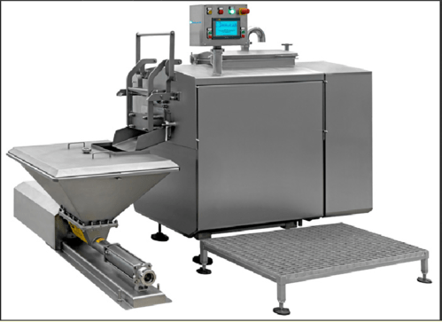

CHEESE MAKING PLANT
Cheese Production Line
Price:
Inquiry for Best Quote
- Equipped with Curd Cutter: Precision curd cutting mechanism
- Hot Water Stretcher: 2-arm stretching section (hot water capacity: 250 kg/hr)
- Moulding Machine: Twin auger moulding system
- Custom Shapes & Weights: Round ball, cylindrical, and custom block options
- High Processing Capacity: 80 kg/hr (Batch) to 800 kg/hr (Continuous)
Cheese Production Line made with Buffalo Milk is manufactured using premium quality raw material. Our adroit team of professionals makes use of updated technology and ultra-modern tools to design these plants as per set international norms and guidelines.
Technical Specifications
Equipment Type
Compact Cheese Processing Plant
Processing Capacity
80 kg/hr batch type to 800 kg/hr continuous type
Machine Body Material
Stainless Steel
Material Grade
SS 304, SS 316 (Food Grade)
Automation Grade
Semi-Automatic
Brand
ALFA TECH INDIA
Hot Water Capacity
1000 LPH to 15000 LPH
Stretching System
Two arms stretching section with 250 kg/hr hot water capacity
Moulding Unit
Moulding machine with two augers
Output Shapes
Round ball, Cylindrical shape, and custom weights